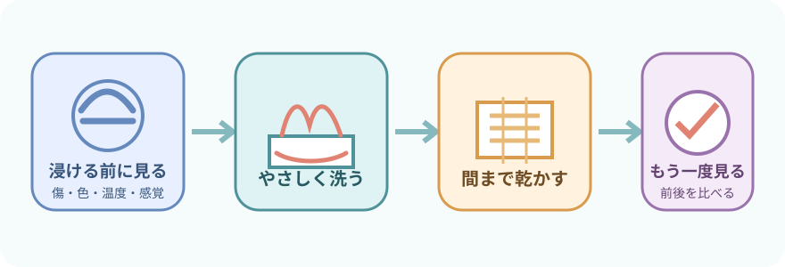
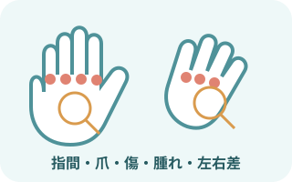
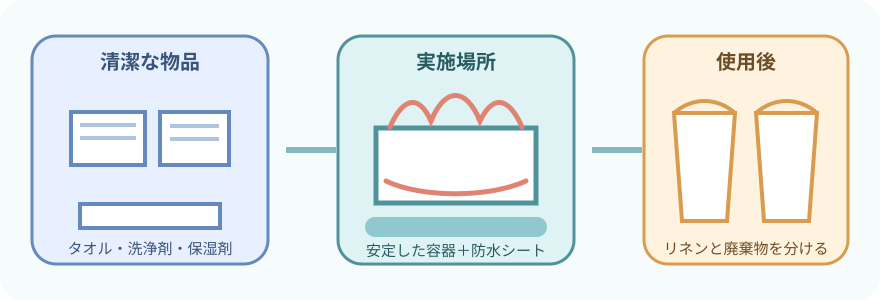
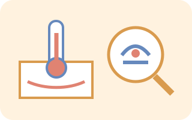
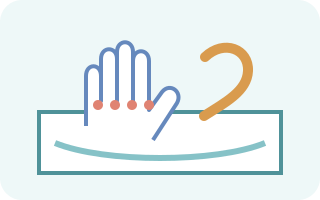
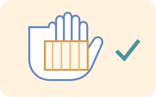
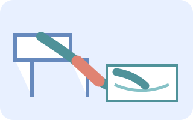
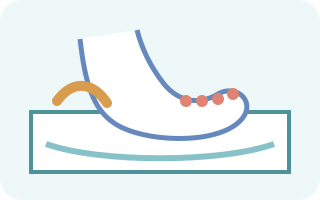
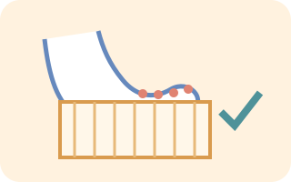
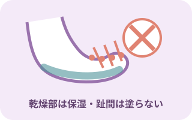

注意事項
浸ける前に方法を変える条件を探す
- 糖尿病、末梢神経障害、末梢循環障害がある
- 痛み・しびれ・冷感が強い、温度を感じにくい
- 発赤、熱感、腫脹、水疱、亀裂、出血、潰瘍、感染徴候がある
- 手術部位、創傷、ドレッシング、点滴・動脈ラインがある
- 安静度、荷重、関節運動、患肢挙上に制限がある
中止して状態を確認する変化
- 呼吸苦、胸部症状、めまい、悪心、冷汗、顔色不良
- 新しい痛み、しびれ、灼熱感、皮膚色の変化
- 出血、皮膚剥離、創部やドレッシングの濡れ
- 医療機器の抜去、閉塞、アラーム
- 本人が続行を望まない
目的

- 手や足の汗、皮脂、汚れを落とす
- 清潔を保ち、不快感を減らす
- 皮膚、爪、循環、感覚、動かしにくさを観察する
- 温かさや爽快感を得られるよう援助する
- 残っているセルフケア能力を生かす
「血流を必ず改善する」「浮腫を治す」とは決めつけない。感じ方と反応を見て、目的に合う方法を選ぶ。
実施前の観察

左右を比べ、指の間まで見る
- 皮膚色、温度、乾燥、湿潤、発赤、傷、水疱、胼胝
- 腫脹・浮腫、左右差、圧迫痕
- 痛み、かゆみ、しびれ、感覚低下
- 指・足趾の動き、拘縮、巧緻動作、荷重の可否
- 爪の長さ、厚さ、変形、陥入、爪周囲の炎症
- 本人が洗える範囲と必要な介助
糖尿病がある足では、小さな傷でも見逃さない。見えにくい足底や踵は鏡を使うか、体位を調整して確認する。
必要物品

- 手または足が無理なく入る容器
- 患者に合う温度の湯
- 温度計
- 施設採用の洗浄剤
- 洗浄用タオルまたは柔らかいスポンジ
- 乾燥用タオル
- バスタオルまたは掛け物
- 防水シート
- 非滅菌手袋
- エプロン
- 飛散リスクに応じたマスク・眼の防護具
- 使用後リネンを入れる袋
- 廃棄物袋
- こぼれた湯を拭く物品
- 必要時、保湿剤
- 必要時、体位保持用クッション
容器の種類、タオルの枚数、湯量、湯温は一律にしない。患者の状態、実施場所、施設の物品に合わせる。
共通の準備
- 説明し、体調と希望を確認
本人確認、目的、部位、体位、中止の合図を共有。普段の手入れ、湯温、洗浄剤の希望も聞く。
- 転倒と濡れを防ぐ
室温とプライバシーを整える。安定した姿勢にし、防水シートを敷く。容器は傾かない場所へ置く。

湯温と手足を確認手指衛生と必要なPPEを行う。湯温を測り、本人にも確認。浸ける前の皮膚、創傷、医療機器を観察する。
手浴の手順
- 装飾品と医療機器を確認
指輪などは本人と管理方法を決める。点滴刺入部、動脈ライン、創傷、ドレッシングは湯へ浸けない。前腕と手首を支える。

片手ずつ、やさしく洗う手を無理なく湯へ入れる。手掌、手背、指、指間、爪周囲を洗う。拘縮した指を強く開かない。

すすぎ、水分を残さない洗浄剤が残らないようにする。こすらず押さえて乾かし、指間、手掌のしわ、爪周囲を再観察する。
足浴の手順

安全な体位と容器の位置を決める座位では足底を移す動作と立ち上がりを見守る。ベッド上では膝や踵を支え、容器の縁で皮膚を圧迫しない。

片足ずつ、短時間で洗う足背、足底、踵、足趾、趾間をやさしく洗う。長時間の浸漬や強い摩擦を避け、反応を確認する。

趾間まで乾かし、再観察片足ずつ持ち上げて水分を押さえる。足底、踵、趾間、爪周囲の変化を見てから、滑らないよう履物を戻す。
皮膚保護と爪の扱い

乾燥部と湿りやすい部位を分ける
- 水分はこすらず、押さえて取る
- 乾燥した皮膚は、状態と製品表示に合わせて保湿する
- 足趾間には保湿剤を塗らない
- ふやけ、亀裂、発赤、浸出液があれば報告する
- 終了後は履物内の異物や湿りも確認する
爪切りは足浴の必須手順ではない
- 本人の希望、爪と皮膚の状態、実施者の役割、院内手順を確認する
- 深爪や爪の角の切り込みを避ける
- 厚い爪、変形、陥入爪、爪周囲炎は無理に切らない
- 糖尿病、循環障害、感覚低下、抗凝固療法中などは、専門的な評価が必要か確認する
方法を変える場面
- 糖尿病・感覚低下：熱さを感じにくい可能性を考え、湯温を客観的に確認。傷、色、熱感、腫脹を前後で比べる
- 循環障害が疑われる：冷感、蒼白・暗赤色、安静時痛、創傷があれば、浸漬前に報告して方法を確認する
- 創傷・感染徴候：通常の容器へ浸けず、創部の指示とドレッシング管理を優先する
- 点滴・動脈ライン：刺入部と固定を濡らさず、屈曲・牽引・閉塞を避ける
- 浮腫・脆弱な皮膚：容器の縁、タオル、手指による圧迫と摩擦を減らす
- 拘縮・麻痺・疼痛：無理に指や関節を開かず、支持と体位を調整する
報告・記録
すぐに報告する変化
- 新しい傷、水疱、出血、皮膚剥離、消えない発赤
- 強い冷感、色調変化、熱感、腫脹、疼痛、しびれ
- 膿、悪臭、浸出液、爪周囲の炎症
- 点滴・ライン・ドレッシングの異常
- 全身状態の悪化、本人が訴える新しい症状
記録すること
- 実施部位、方法、体位、使用した洗浄剤・保湿剤
- 実施前後の皮膚、爪、腫脹、感覚、疼痛
- 本人が行えた動作と必要な介助
- 実施中・実施後の反応
- 報告内容と、その後の対応